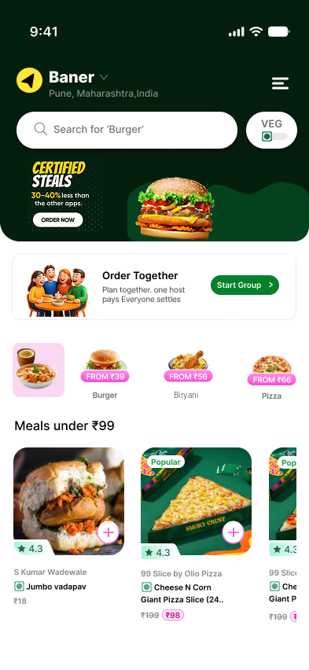
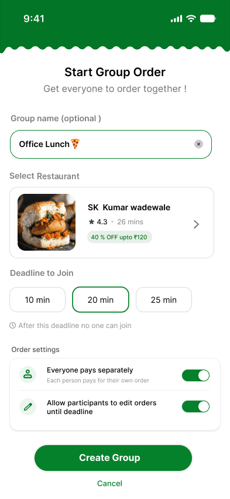
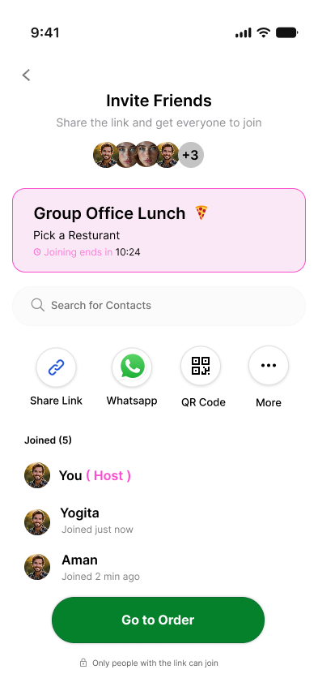
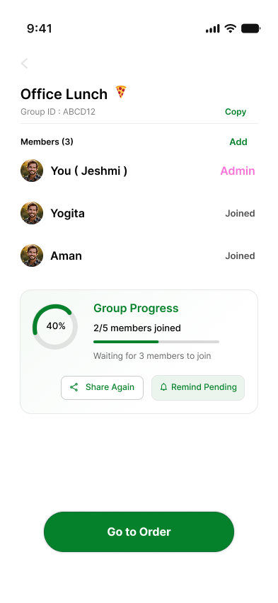
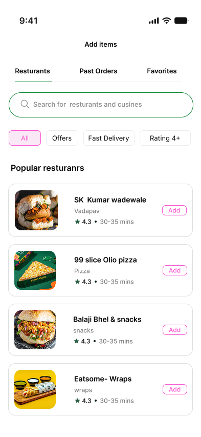
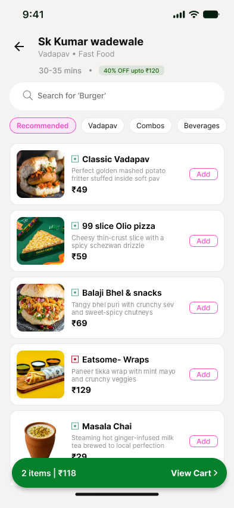
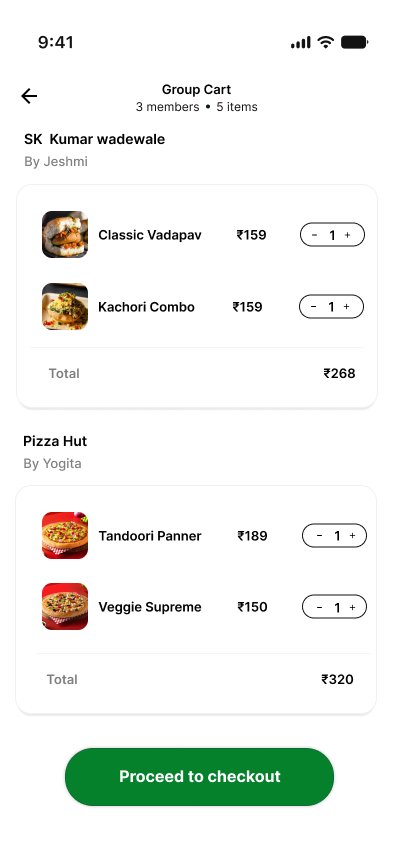

Side quest 02 · Feature proposal · Consumer, social
Toing.
Collaborative food planning for groups. A feature proposal that lets friends decide, order and settle payments without leaving Toing.
- Project
- RoleProduct designerScopeResearch, UX/UI, architecture, interactionPlatformiOS, AndroidTimeline2 weeks



01 · Overview
Aligning group appetites.
Group planning fragments fast
Friends have different diets, countless uncurated options and no central place to reach consensus. Coordination falls back to copy-pasting links across chat threads, creating decision bottlenecks and payment friction after the order.
One consolidated order
A collaborative ordering path inside Toing that moves groups from diverging preferences to a single order with minimal back-and-forth. Success is measured by cart completion rate and reduced time to decision.
02 · The bottleneck
Why group coordination fails.
Each step compounds the one before it, until the order stalls.
Different preferences
Varying diets, allergies and individual cravings clash.
Multiple options
Dozens of menus browsed across separate tabs.
Back-and-forth chat
Fragmented, unpinned link sharing in chat apps.
Decision bottleneck
Ordering stalls completely, and the cart is often abandoned.
The fundamental friction is not discovering food. It is aligning group intent inside a single, focused decision space.
03 · Design shift
Coordinating over discovering.
Instead of building another menu aggregator, the design focuses on the coordination cycle. Planning, discovery, selection and splitting in one shared session turns a fragmented manual flow into a single timeline.
04 · Groundwork
UX audit and research methods.
Competitive analysis
How group ordering works in competing delivery apps. Some support shared carts, but lack real-time sync, deadlines and automatic splits after checkout.
User conversations
Interviews with Gen Z users who order together showed the process relies on a “lead coordinator” who collects orders, tracks diets and chases money.
Behavioural observation
On a standard group-order prototype, drop-offs spiked at open-ended menu exploration. Unstructured freedom delays consensus.
Food coordination friction behaves like a funnel, and it grows with group size. The product has to narrow choices step by step and automate the awkward job of collecting money.
05 · UX strategy
Translating insights into solutions.
| Principle | Why it matters | Solution |
|---|---|---|
| Limit choice fatigue | Unlimited options trigger paralysis. Groups need progressive narrowing, not endless catalogues. | Progressive filtering |
| Remove coordinator load | One host usually collects selections, calculates splits and checks out alone. | Shared real-time cart |
| Align checkout deadlines | Group orders stall when people delay picking. Hard caps drive action. | Join deadlines |
| Settle payments instantly | Working out who owes what after the order is awkward and often forgotten. | Automatic bill split |
06 · Product pillars
Refining the functional targets.
Reduce coordination
Move preference gathering out of host-run chat polls and into shared modules.
Focus discovery
Progressive filters surface dishes the whole group can agree on.
Support comparison
Weigh alternatives by diet, rating and price without switching pages.
Reach decisions
Real-time deadlines and a shared checkout set clear boundaries.
07 · Information architecture
One journey from appetite to payment.
The shared flow mirrors how groups already behave. There are no hard gates: people add dishes, adjust preferences and check progress at their own pace without blocking the host.
Onboarding
Join via code or share link
Create group
Host creates and configures
Preferences
Select shared dietary layers
Food discovery
Browse matched restaurants
Comparison
Weigh dishes side by side
Decision
Lock choices, notify everyone
08 · Key design decisions
Solving core social friction through UI architecture.
Decision 1
Group creation and preferences
Problem: group preferences are scattered across chats and forgotten at the moment of ordering. Solution: a shared diet and budget layer, set right before discovery. Collecting diets upfront lets discovery narrow the options immediately.
Trade-off: Adds a 30-second setup step, but saves minutes of menu scanning and back-and-forth later.

Decision 2
Unified food discovery
How do we balance individual cravings with what works for the whole group? A group filter strip shows active filters like Veg or under ₹200, restaurants show how well they suit every member, and avatar tags show who is looking at or has liked an item.


Decision 3
Comparison and real-time agreement
Indecision kills orders: when everyone adds items alone, carts end up bloated and over budget. A shared cart lets people compare and agree before confirming, and flags items that conflict with someone’s allergies straight away.

Decision 4
One-tap checkout and auto-split
Everyone can pay separately with UPI or card, so nobody has to calculate splits or chase money after the order. Try it: this checkout is a working prototype.
Try it · who pays?
09 · Outcomes
From concept to a complete flow.
This is a feature proposal, so these are design outcomes, not measured results.
Less coordination overhead
Preference gathering and ordering moved into native modules, cutting out messy external messengers.
Dietary layers made visible
Preferences, allergy warnings and price limits are shown clearly, preventing mistakes and awkward checkouts.
A structured path to agreement
Open-ended browsing became a narrowing funnel that aligns group cravings in under a minute.
10 · Reflection
Designing the social layer behind the transaction.
Food delivery is social, yet its interfaces stay isolated and transactional. Shifting the focus from food discovery to group decision-making, with coordination and checkout deadlines built in, showed that clean UX can resolve conversational friction.
Feature proposal. Not affiliated with or endorsed by Toing.